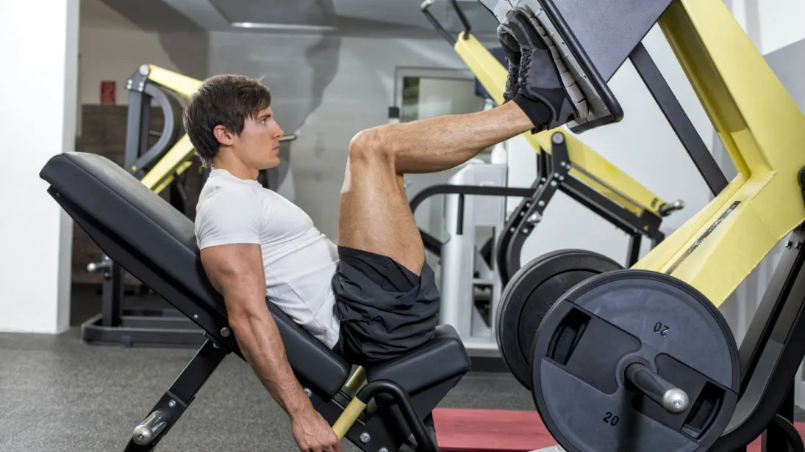

Below are some good beginner workouts, easy to get into your daily routine!
It's important to remember to start slowly, don't overdo it, and work your way up gradually.
Squats, lunges, pushups, pullups, planks, chrunches, leg raises.
Walking, jogging, running, biking, swimming, jumping rope, hiking.
Dynamic stretches, static streches, foam rolling

To begin your workout, select a cardio machine and workout for 20 to 25 minutes. Start slowly and adjust the difficulty as needed for your preference. You know your limits.

Try to complete 3 sets of 10-20 reps for each of these during your second workout. Box Squat - Stationary Lunges - Calf Raises - Glute Bridge.

Do 3 rounds of these exercises on your third workout. Lat Pulldown - High Plank - Dumbbell Chest Press.